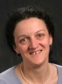
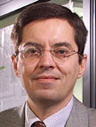

| US Participants | China Participants |
| Organizers |
Phil Papadopoulos
Program Director
UC Computing Systems
SDSC
Associate Professor
CS, UCSD |
Yifeng Chen
Professor
School of EECS
Peking University
|
Peter Arzberger
Director, NBCR
Director
Life Sciences Initiatives
UCSD | |
| NSF and NSFC Participants |
Gabrielle Allen
Program Director
OCI, NSF
Professor, CS
Louisiana State University | Zhaotian Zhang
Deputy Director
Information Science
NSFC |
Emily Ashworth
Office Head
Director
Beijing Office
NSF | Huai Chen
Division Director
Bureau of International Cooperation
NSFC |
Nancy Sung
OISE
NSF | Ke Liu
Division Director
Information Sciences
NSFC
|
| Xiaochun Cao
Information Sciences
NSFC |
| Xiuping Liu
Program Manager
Bureau of International Cooperation |
| Emerging Architectures |
Jose Fortes
Professor
Electrical & Computer Engineering
University of Florida | Minyi Guo
Professor, CSE
Shanghai Jiao Tong University |
Peter Dinda
Associate Professor
Head, CES Division
Department of EECS
Northwestern University | Yutong Lu
Professor
National University of Defense Technology |
Renato Figueiredo
Associate Professor
ECE, University of Florida
Faculty
ACIS Laboratory | Xin Peng
Associate Professor
Research Professor
Software School
Fudan University |
Manish Parashar
Professor, ECE
Director
Center for Autonomic Computing
Rutgers | Lu Zhang
Professor
Institute of Software
School of EECS
Peking University |
Judy Qiu
Assistant Professor
School of Informatics and Computing
Indiana University | Yuming Zhou
Research
Department CST
Nanjing University |
| Extreme-scale Software |
Padma Raghavan
Director,
Institute for CyberScience
Professor, CSE
Pennsylvania State University | Depei Qian
Professor, Beihang University
Director, IST
Chief scientist, CCF |
Edmond Chow
Associate Professor
School of CSE
College of Computing
Georgia Institute of Technology | Wenguang Chen
Professor
Associate Head
Department of CST
Tsinghua University |
Bill Gropp
Professor, Computer Science
Deputy Director, IACAT
Director, Parallel Computing Institute
UIUC | Yifeng Chen
Professor
School of EECS
Software Institute
Peking University |
Esmond Ng
Leader, Senior Scientist
Scientific Computing Group
NERSC
LBNL | Xiaobing Feng
Professor
Director
LACT
ICT, CAS |
Abani Patra
Professor
University at Buffalo
New York | Yunquan Zhang
Professor
ICS, CAS
General Sceretary
SAMSS, CCF, HPCTC |
| Trustworthy Software |
Rebecca Wright
Professor, CS
Rutgers
Deputy Director
DIMACS | Zhi Jin
Professor
Peking University
Adjunct professor
ICT, CAS |
Lorenzo Alvisi
Professor, CS
Co-director, LASR
University of Texa, Austin | Wei Dong
Professor
National University of Defense Technology |
Morley Z. Mao
Associate Professor
Department of Electrical Engineering and Computer Science
University of Michigan | Ming Gu
Professor
Associate Dean
School of Software
Tsinghua University |
Patrick Traynor
Assistant Professor
School of Computer Science
Georgia Institute of Technology | Jian Zhang
Research Professor
Institute of Software
CAS |
Felix Wu
Professor
Computer Science
UC Davis | Jianjun Zhao
Professor
School of Software
Shanghai Jiao Tong University |
| PRAGMA Liaison |
Cindy Zheng
Grid Engineer
PRAGMA Grid Coordinator
San Diego Supercomputer Center
UCSD | |
{kind=link}
{kind=link}